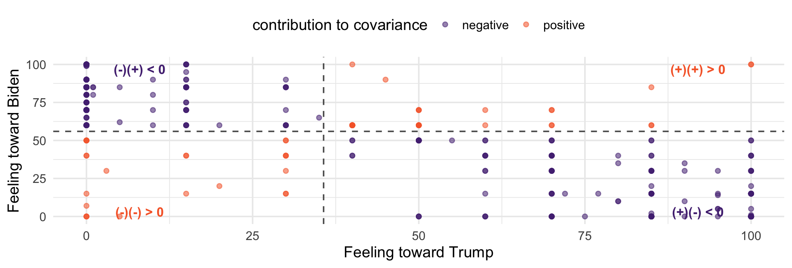
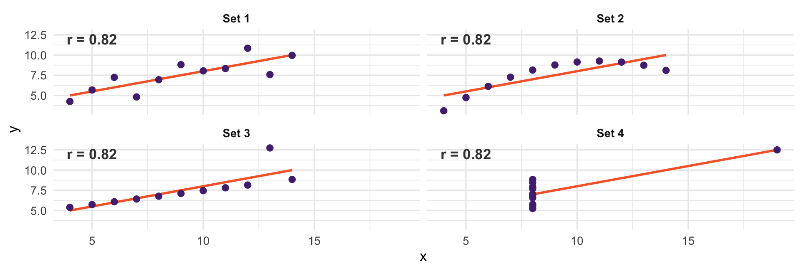

| votechoice | Favor | Neutral | Oppose |
|---|---|---|---|
| Biden | 0.503 | 0.041 | 0.027 |
| Trump | 0.162 | 0.133 | 0.134 |
Describing two variables at once, covariance, and correlation
Everything so far has been about one random variable at a time
But most interesting questions in social science involve two or more
Today: how two random variables behave together + baby steps towards regression
The joint PMF of discrete \(X\) and \(Y\) gives the probability of every combination:
\[p_{X,Y}(x, y) = P(X = x, \; Y = y)\]
It must be non-negative
And it must sum to 1 over all pairs: \(\sum_x \sum_y p_{X,Y}(x,y) = 1\)
Same two rules as always. There are just two indices now.
Vote choice and support for raising taxes on the rich, as proportions of the whole sample:
| votechoice | Favor | Neutral | Oppose |
|---|---|---|---|
| Biden | 0.503 | 0.041 | 0.027 |
| Trump | 0.162 | 0.133 | 0.134 |
That is a joint PMF. The six cells sum to 1, and each is \(P(\text{vote} = v, \; \text{policy} = t)\).
Informally, we call these cross-tabs. Formally, they are joint distributions.
To get the distribution of one variable alone, sum over the other:
\[p_X(x) = \sum_y p_{X,Y}(x, y)\]
| votechoice | P(vote choice) |
|---|---|
| Biden | 0.571 |
| Trump | 0.429 |
Called marginal distributions for a silly reason: they are the row and column totals, traditionally written in the margins of the table.
Fix one variable, and renormalize:
\[p_{Y \mid X}(y \mid x) = \frac{p_{X,Y}(x,y)}{p_X(x)}\]
| votechoice | Favor | Neutral | Oppose |
|---|---|---|---|
| Biden | 0.882 | 0.071 | 0.047 |
| Trump | 0.377 | 0.309 | 0.313 |
Each row now sums to 1. Just conditional probability applied to a whole distribution.
\(X\) and \(Y\) are independent if the joint is the product of the marginals, for every pair:
\[p_{X,Y}(x,y) = p_X(x)\,p_Y(y)\]
Check one cell. \(P(\text{Biden}) = 0.571\) and \(P(\text{Favor}) = 0.665\):
The observed joint probability is 0.503. Not even close!
So, vote choice and tax policy views are strongly dependent.
Marginals tell us about each variable alone
Conditionals tell us about one given the other
Now we want a single number summarizing whether they move together
\[\text{Cov}(X,Y) = E\big[(X - E[X])(Y - E[Y])\big]\]
Help me out (I’ve forgotten all my stats knowledge!). Why is this a good measure - what is it doing?

The dashed lines are the two means.
Points above both means or below both means contribute positively
Points high on one and low on the other contribute negatively
Covariance is the average of those contributions
Here almost everything lands in the two negative quadrants: warm toward Trump goes with cold toward Biden. Negative covariance.
Negative, as the picture promised
But what does \(-1170\) mean?
The units are thermometer-points times thermometer-points. There is no such thing.
Covariance depends entirely on the scale of your variables
Measure income in dollars instead of thousands and the covariance grows by a factor of 1,000
Note: \(\text{Cov}(aX, bY) = ab\,\text{Cov}(X,Y)\)
So the sign is meaningful and the magnitude is not comparable across variables. We need to standardize.
Divide by both standard deviations:
\[\rho_{X,Y} = \frac{\text{Cov}(X,Y)}{SD(X)\, SD(Y)}\]
[1] -0.8159562[1] -0.8159562−0.82. Now it means something: warmth toward one candidate strongly predicts coldness toward the other.
Always between −1 and 1
\(\rho = \pm 1\) only if the points fall exactly on a straight line
Unitless — unaffected by rescaling either variable
Symmetric: \(\rho_{X,Y} = \rho_{Y,X}\)
If \(X\) and \(Y\) are independent then \(\rho = 0\). But the reverse does not hold — zero correlation does not imply independence. (why?)

Four datasets. Identical correlations, identical regression lines. One is linear, one is curved, two are driven by a single point.
It only sees linear association. Set 2 is a perfect curve and still reports 0.82
It is not robust. Sets 3 and 4 are decided by one observation
Soon we will fit \(Y = \beta_0 + \beta_1 X\) by least squares. The answer will turn out to be:
\[\beta_1 = \frac{\text{Cov}(X, Y)}{\text{Var}(X)}\]
The numerator: how \(X\) and \(Y\) move together
The denominator: how much \(X\) moves at all
A regression slope is co-movement per unit of variation in the predictor
[1] -0.7288199 ft_trump
-0.7288199 Identical. We have already computed a regression coefficient
Build the joint distribution of votechoice and aca as proportions of the whole sample. Do the cells sum to 1?
Get the marginal distribution of aca from it.
Compute the conditional distribution of aca given votechoice. Which rows sum to 1?
Compute cor(ft_science, ft_fauci). Then compute the regression slope by hand using cov and var, and check it against lm.
Read: Blitzstein and Hwang, Sections 7.1–7.5
Next class: conditional expectation — the mean of \(Y\) within levels of \(X\)
We computed one by hand in Week 2 with group_by()
It is the single most important object between here and regression